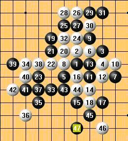

无畏者的攻击
#1 无畏者的攻击作者：茗弈宽容 发表时间：2009-9-11 11:27:11

［ 潇洒 于 2009-9-11 14:15:28 时奖励此帖[金币加 20 威望加1］
#2 Re:无畏者的攻击作者：茗弈宽容 发表时间：2009-9-11 11:29:42
 “我的人品开始大爆发”
“我的人品开始大爆发”#3 Re:无畏者的攻击作者：小丸.net 发表时间：2009-9-11 13:56:37
大多男棋手都有个通病，就是见了美女棋手就会悚。。。但是有个人绝对不吃这一套。。。。
#4 Re:无畏者的攻击作者：潇洒 发表时间：2009-9-11 14:17:52
原来宽容是阿布啊。。
#5 Re:无畏者的攻击作者：无尽 发表时间：2009-9-11 14:44:47
看来潇洒很久没上IWZQ了
#6 Re:无畏者的攻击作者：小丸.net 发表时间：2009-9-11 15:09:28
我也才知道楼主就是郑蔚楠，我天天上网，我怎么不知道。。。。#7 Re:无畏者的攻击作者：无尽 发表时间：2009-9-11 15:16:34
 楼主不是阿布8
楼主不是阿布8 
#8 Re:无畏者的攻击作者：慎獨 发表时间：2009-9-11 15:59:15
［ 茗弈小刀 于 2009-9-11 16:48:40 时奖励此帖[金币加 20 威望加1］0+1
#9 Re:无畏者的攻击作者：王志伟123 发表时间：2009-9-11 16:41:44

#10 Re:无畏者的攻击作者：茗弈宽容 发表时间：2009-9-11 16:42:09
晕呢，我不是阿布，这篇文章是转的她的。#11 Re:Re:无畏者的攻击作者：团子亲卫队 发表时间：2009-9-11 16:56:45
引用：谁呀？
原文由 小丸.net 发表于 2009-9-11 13:56:37 :大多男棋手都有个通病，就是见了美女棋手就会悚。。。但是有个人绝对不吃这一套。。。。
#12 Re:无畏者的攻击作者：潇洒 发表时间：2009-9-11 17:06:26
哦。。原来不是啊。。认错人了。。
［ 茗弈宽容 于 2009-9-11 18:50:08 时花20金币送鲜花一朵］
#13 Re:无畏者的攻击作者：米 发表时间：2009-9-12 8:28:03
=======上图对应的爱五子棋谱代码如下，以便你拆解：========
h8h9j9j8g7i9k7g8i10k8i7j7i8i6h5h7j5i5f10g9f9f8e7h10g11h12h11g12i12e8i11d8c8j11e5
======================================================
=======上图对应的爱五子棋谱代码如下，以便你拆解：========
h8h9j9j8g7i9k7g8i10k8i7j7i8i6h5h7j5i5f10g9f9f8e7h10g11h12h11g12i12e8i11d8c8j11e5e6d5f6c7c6d6b8i4
======================================================
=======上图对应的爱五子棋谱代码如下，以便你拆解：========
h8h9j9j8g7i9k7g8i10k8i7j7i8i6h5h7j5i5f10g9f9f8e7h10g11h12h11g12i12e8i11d8c8j11e5e6d5f6c7c6d6b8i4h3j13g10l11m10l9i13g6f7l10l12j4
======================================================
实战的白30是必败的，我来摆一下如果白30改走e8黑如何必胜。第一图中，白32的冲是最强防，否则黑占据那个d8点就是相对简单的必胜。至白34，大家不妨验证一下，虽然黑到处是优势，却没有一个局部能必胜。我的思路是：假如在i4摆个黑子白棋只能防在左下而不是右上，则黑多了那个子后右边就必胜了。于是，我布下了黑35这个一子通三路的好点，利用左下的攻击试图达到我刚才假设的理想图。走到上面第二图，黑43占据我预想的好点，白只能防在左下否则黑在左下必胜。有了这个准备，我在右边亮剑了。图三是最后结果，有了黑43这个子的照应，黑必胜。我已经穷尽了白的所有防守，不是局部黑胜就是按我上面这个构想全局联络必胜，这个白30改走e8的确必败了。
［ 茗弈小刀 于 2009-9-12 10:59:31 时奖励此帖[金币加 20 威望加1］
［ 慎独 于 2009-9-12 11:00:01 时花20金币送鲜花一朵］
［ 慎独 于 2009-9-12 11:00:19 时花20金币送鲜花一朵］
［ 慎独 于 2009-9-12 11:00:34 时花20金币送鲜花一朵］
［ 茗弈宽容 于 2009-9-12 11:01:05 时花20金币送鲜花一朵］
#14 Re:无畏者的攻击作者：茗弈宽容 发表时间：2009-9-12 11:02:09
谢谢小米老师分享。#15 Re:无畏者的攻击作者：妙玉偷星 发表时间：2009-9-12 14:22:12
这个还通疏星，不过存在盘端问题
#16 Re:无畏者的攻击作者：妙玉偷星 发表时间：2009-9-12 14:30:05
当时下过，没有看清棋，下完分析一下，汗死我了，，白存在盘端问题，，
#17 Re:无畏者的攻击作者：妙玉偷星 发表时间：2009-9-12 14:53:18
=======上图对应的爱五子棋谱代码如下，以便你拆解：========
h8h7f7f8h9g8f9e9g7i9e5f6d6c7d8d7
======================================================
#18 Re:无畏者的攻击作者：茗弈宽容 发表时间：2009-9-12 21:31:58
星儿的对局呢？摆出来分享下吧。